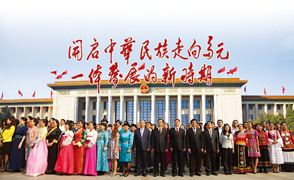

红色翻译一甲子 弘扬真理架桥梁
2015年12月11日 来源：《中国民族报》

历史是一条奔腾不息的长河，满载着艰辛，满载着收获，满载着喜悦，迎来了中国民族语文翻译局60华诞。1955年12月12日至今，中国民族语文翻译局走过了曲折而辉煌的发展历程，几代翻译人秉承“讲政治，顾大局，一丝不苟，甘于奉献”的光荣传统，历经创业、跋涉、发展、创新等数次洗礼和锤炼，执著赤诚，孜孜以求，用手中的笔创造了无愧于历史、无愧于民族的业绩，书写了民族语文翻译史上的壮丽诗篇。
忆往昔：铁肩担使命 志做民族团结坚实的铺路石
民族语文翻译工作，是党和国家政治、经济和社会生活中一项基础性、专业性、服务性的工作，也是民族工作重要的组成部分。自中国人民政治协商会议第一届全体会议召开以来，民族语文翻译工作就开始为党和国家重大政治生活提供服务保障。1950年，中央民委参事室用蒙古、藏、维吾尔、哈萨克、朝鲜等民族文字翻译出版《中国人民政治协商会议共同纲领》等文件。1954年，第一届全国人民代表大会第一次会议召开。大会设立民族语文翻译组，时任国家民委常务副主任的汪锋任翻译组组长，赛福鼎•艾则孜、萨空了、平措汪杰任副组长。翻译人员将《中华人民共和国宪法》、《政府工作报告》翻译成蒙古、藏、维吾尔、哈萨克、朝鲜5种民族文字。这些工作如同星星之火，承担起沟通中央与民族地区、推动各民族交往交流的特殊职能，为党和国家进行社会主义改造、初创建设事业作出了特殊贡献。
随着国家建设事业的蓬勃发展，为实现全国各族人民平等团结、繁荣进步，共同开创新中国伟大复兴的光辉未来，党中央高瞻远瞩，从全国各地调集了一批优秀的民族语文翻译人才，开创民族语文翻译之业。1955年12月12日，经周恩来总理批准，新中国成立后唯一的国家级少数民族语言文字翻译机构——中华人民共和国民族事务委员会翻译局应运而生，主要承担马列经典著作、党和国家重要文件文献，中国共产党全国代表大会、中华人民共和国全国人民代表大会、中国人民政治协商会议，以及国家法律法规的民族语文翻译工作。周恩来总理任命时任国家民委办公厅副主任的朋斯克兼任翻译局局长。
随后数十年，由于事业发展需要，翻译局曾四度更名，翻译语种由5种增加到7种。半个多世纪的奋斗历程，无论经历何种艰难曲折，翻译局的工作始终都保持了历史的延续性，以实际行动诠释了《宪法》关于“各民族都有使用和发展自己的语言文字的自由”的原则，全力践行了中国共产党尊重少数民族、重视民族工作、追求民族团结的执政理念。
可以说，倾国家之力成立中央一级少数民族语言文字翻译机构，延揽全国顶尖的少数民族翻译精英汇聚北京，用本国7种少数民族语言文字同时传递国家最高规格会议的声音，是中国共产党在民族工作领域中的一个伟大创举，在世界各国发展史上也属罕见。由此，民族语文翻译工作被纳入国家发展大局、民族团结进步事业的格局中，民族语文翻译工作全面进入崭新的历史时期，并从这里逐步走向未来、走向世界。
看今朝：妙手译文章 为促进民族交往交流交融贡献四亿字
“翻译是我们的使命，质量是我们的根本。”六十载译坛耕耘，翻译局始终与祖国同呼吸、共命运，用蒙古、藏、维吾尔、哈萨克、朝鲜、彝、壮7种民族语文，翻译国家重大会议文件、马列经典著作、党和国家重要文件文献、法律法规等各类图书2.6万余本，翻译量超过4亿字，为党和国家大政方针政策在民族地区的传播、为促进各民族群众交往交流交融、为民族团结进步事业发挥了桥梁和纽带作用，作出了应有的贡献。
——以特殊身份见证国家重大政治活动。60年来，翻译局圆满完成所承担的历届历次全国党代会、人代会、政协会议主要文件的翻译和同声传译，翻译9284万字，大会现场同声传译5684万字，为党和国家的重大政治活动提供了优质翻译服务，尊重和保障了少数民族在国家政治生活中使用本民族语言文字的权利。1982年11月，我局首次独立承担了中国共产党第十二次全国代表大会民族语文翻译工作。此后，圆满完成党的十三大到十八大历次大会民族语文翻译工作。经过半个多世纪的耕耘，全国党代会、全国“两会”民族语文翻译已经成为我局常态性工作。全国政协副主席、国家民委主任王正伟2014年3月视察“两会”民族语文翻译工作时指出，民族语文翻译工作是国家民委工作中能够引起党中央、国务院高度重视的非常重要的组成部分。这一高度评价，也充分体现了这份工作在整个国家格局中是占有一定分量的。
——多部马列主义经典著作民族文范本面世。60年来，我局始终致力于马恩列斯、老一辈无产阶级革命家和国家重要文件文献的翻译，在党中央和民族地区之间架设了一座通道和桥梁。中共中央在《关于一九四三年翻译工作的决定》中就指出：“翻译工作，尤其是马列主义古典著作的翻译工作，是党的重要任务之一。”用7种民族文字翻译经典著作，把马克思主义中国化的最新理论成果及时传递给少数民族群众，是我局牢记于心的光荣使命。我局先后翻译了《资本论》、《马克思恩格斯选集》、《列宁选集》、《斯大林选集》，还翻译了《毛泽东选集》、《周恩来选集》、《刘少奇选集》、《朱德选集》、《邓小平文选》、《江泽民文选》、胡锦涛系列讲话、《习近平谈治国理政》等几代领导人的重要讲话、重要著作，翻译量占到全局翻译总量近一半，为少数民族干部群众学习马列经典理论提供了民族文范本，也为我国整个马克思主义理论的研究、宣传作出了积极努力。进入新世纪，为培育社会主义核心价值体系，以“四个认同”筑牢民族团结的思想根基，我局加大了对重要讲话、重要文件、重大政治活动的翻译。同时，注重翻译成果在民族地区的传播，加大送书下乡力度，先后向内蒙古、新疆、西藏等十几个省区赠送各类图书两万余册。
——系列民族文版法律法规翻译出版。60年来，翻译局始终以推进依法治国为己任，翻译了数十部法律法规及司法解释，极大地丰富了少数民族公共文化产品，推进了民族地区的普法教育进程。早在1982年，我局就翻译了《中华人民共和国宪法》、《中华人民共和国民事诉讼法》，1985年全面承担起历年《中华人民共和国法律汇编》的翻译。自此，以法律汇编为主，包括司法解释、法律释义、法律读物等400余件法律法规及图书，均由我局翻译成少数民族文字。
——为国家各级部门提供优质翻译服务。60年来，翻译局以面向社会提供优质服务为己任，先后为中共中央、国务院有关部门，解放军总政治部，全国总工会、共青团中央、全国妇联等几十家单位提供翻译服务，促进了各民族干部群众的交往交流交融。服务于党和国家大局，服务于少数民族和民族地区发展，是我局的责任担当。上世纪50年代，首任局长朋斯克多次为毛泽东主席、周恩来总理担任翻译。上世纪八九十年代，江泽民、胡锦涛、李鹏等领导同志到民族地区视察时，我局同志也很荣幸地担任了翻译。新世纪，在一些重大活动中，更活跃着我局翻译人员的身影。此外，我局还承担了《民族画报》、国家司法考试试卷、国家信访局少数民族文字上访信件等民族语文翻译，以及《民族文学》民族文版审稿工作等。
——民族语文翻译理论研究硕果累累。国家设立中国民族语文翻译局，不仅是建立少数民族语言文字翻译机构，更旨在对全国、对今后整个民族语文翻译工作有一个方向性的指引。因此，翻译局在承担若干翻译职能的同时，有责任引领整个国家少数民族语言文字翻译工作，在这一过程中起到标杆示范效应。60年来，翻译局以推进民族基础理论、翻译理论、规范化研究为己任，依托少数民族语文新词术语规范化项目，加强新词术语审定工作；定期举办全国性民族语文翻译学术研讨会，开展全国民族语文翻译优秀论文评奖活动；创办学术期刊《民族翻译》，打造民族语文翻译理论研究和学术交流平台等。
——民族语文翻译信息化建设填补空白。传承与创新，是发展的永恒主题。进入新世纪，信息技术和网络媒介发展迅速，翻译局在重视语言文字本体研究的基础上，加大了基于信息处理的民族语文翻译应用研究和基础工程建设。近几年，我局充分整合60年的语料资源，借助“互联网+”的力量，开展了7个文种的翻译辅助软件研发工作，并成功研发出电子词典、校对软件、对照查询、智能翻译等近30款应用型民族语文软件，填补了相关领域的空白。这些软件广泛应用于全国“两会”、党代会以及有关部门民族语文翻译工作中，提高了翻译的质量和工作效率。同时，对民族地区双语教学、远程教育、干部双语培训等方面也有一定的实用价值。在互联网时代的今天，新时期的民族语文翻译将搭上信息高速路，越走越远。
薪火相传翻译路，弘扬真理架桥梁。中国民族语文翻译局的60年，是一个始终坚持以民族文化建设为己任、坚守高质量翻译理念、坚持以主流文化为主导和兼容并蓄文化态度的历程，是一个坚守翻译本真、脚踏实地、默默无闻、潜心问学的历程，更是一个肩负民族使命、传承优秀文化、顶起国家民族语文翻译事业脊梁的历程。打开一本本民族文字刊印的译著，我们仿佛看到夜以继日、挑灯夜战、紧张翻译的盏盏灯光，仿佛看到为追求译介作品信达雅，面红耳赤争论的火热场面。正是这支严谨求实、敬业无私、勇于担当的知识分子群体，秉承“讲政治，顾大局，一丝不苟，甘于奉献”的光荣传统，缔造了如今的辉煌业绩，得到了党中央、全国人大、国务院、全国政协，以及国家民委等各级部门领导的肯定和赞誉，还多次获得“全国民族团结进步先进集体”、“全国先进保密工作集体”、“中央国家机关五一劳动奖状”、“中央国家机关文明单位”等荣誉称号。
新起点：坚守中超越 建设一流国家级民族语文翻译基地
“前行是最好的纪念。”六十年翻译追梦路，薪火相传；一甲子梦想与坚守，历久弥坚。如今，国家正处在开启中华民族多元一体发展的新时期。新时期，新思路，新发展，我局将继续在国家民委党组的正确领导下，以文化体制改革为契机，突出国家民族语文政策和国家语言战略需求，不断提高民族语文翻译质量和服务水平，扎实推进基础理论研究、信息技术创新，有效促进民族语文翻译服务能力整体升级，全力打造一流的国家级民族语文翻译基地，为实现中华民族伟大复兴的中国梦作出新的更大贡献。
——始终以民族语文翻译为中心工作。坚持高标准、严要求，强化质量意识、精品意识，以一流的翻译水平、一流的翻译队伍打造一批民族文版的经典文献，担当好民族语文翻译领域里的“领头羊”、“排头兵”；继续做好各项翻译工作，提供更加优质高效的服务，及时把党和国家的方针政策、文件文献传递到民族地区，为各民族之间交往交流交融作出积极努力。
——进一步加强民族语文基础理论研究。传承民族文化优秀基因，围绕基础理论、翻译理论及新词术语等问题开展专题研究，形成一系列参考工具书或研究报告，发挥好作为国家民委管理和指导全国民族语文翻译工作的参谋和智囊作用，不断推动民族语文翻译创造性转化、创新性发展。
——进一步推进民族语文信息化建设。加强智能翻译及交互式语音研发，加大对民族文辅助翻译软件的宣传普及力度，让民族语文信息化成果尽快惠及更多的民族地区和少数民族群众。积极建立民族语文网络信息共享平台建设，逐步实现多语种民族语文翻译自动化。
——进一步加强人才队伍建设。选好人、用好人、培养好人，不断优化队伍结构，更加重视人才培养，关心重视中青年干部的成长，以多种形式搞好传帮带，以老带新，调动干部职工的积极性，增强内在动力，建设一支一流的、永远忠诚于党和国家的民族语文翻译国家队。